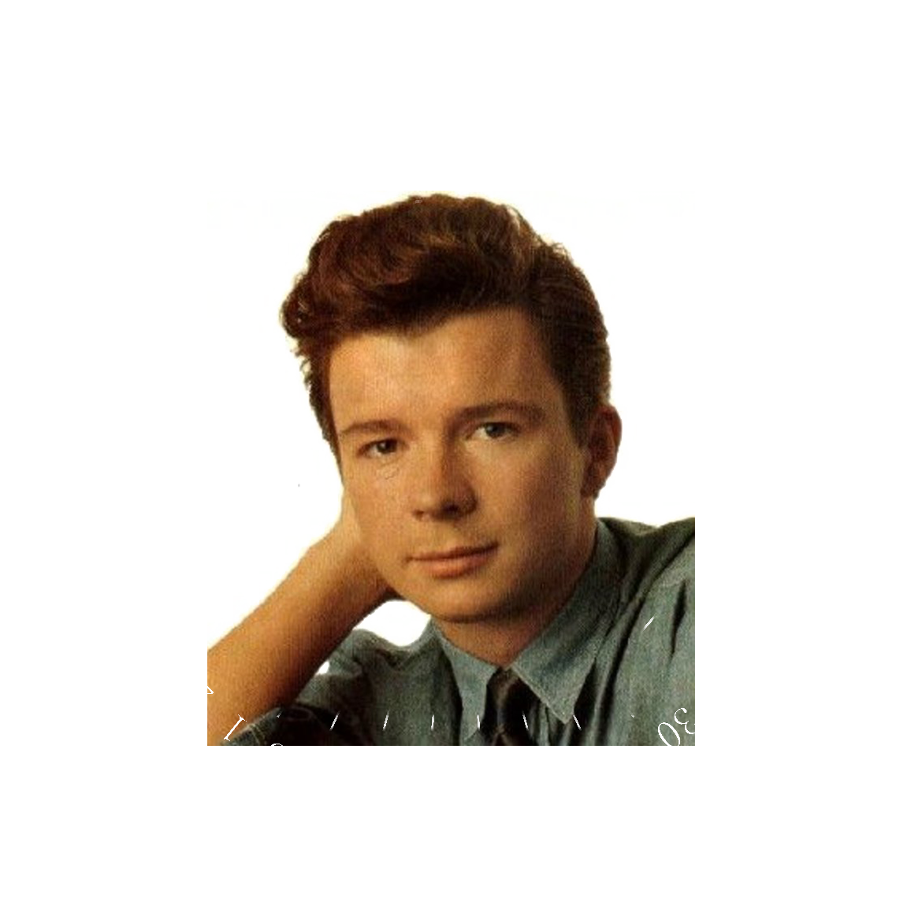
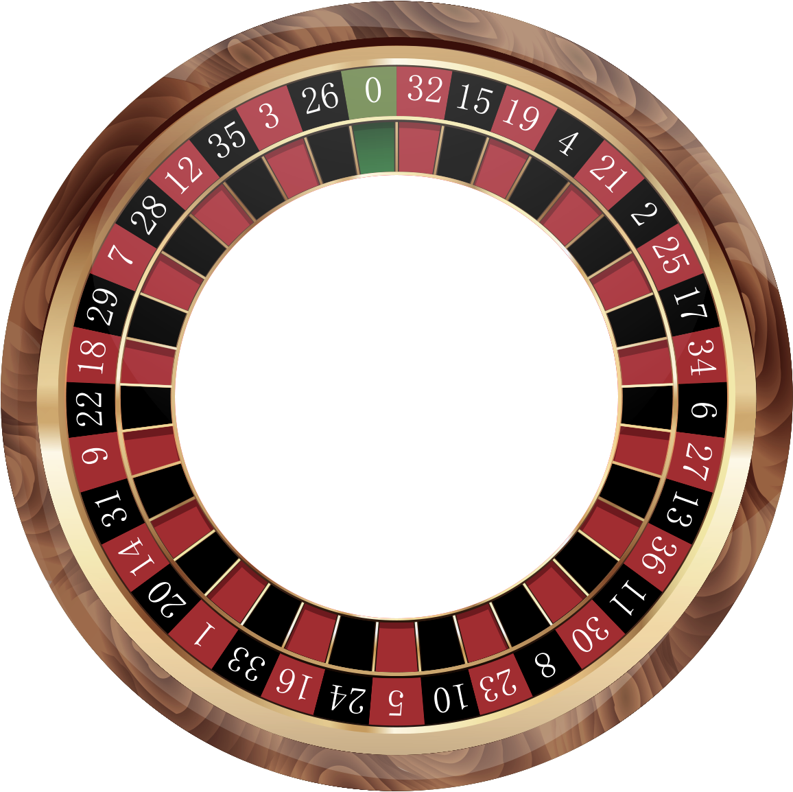
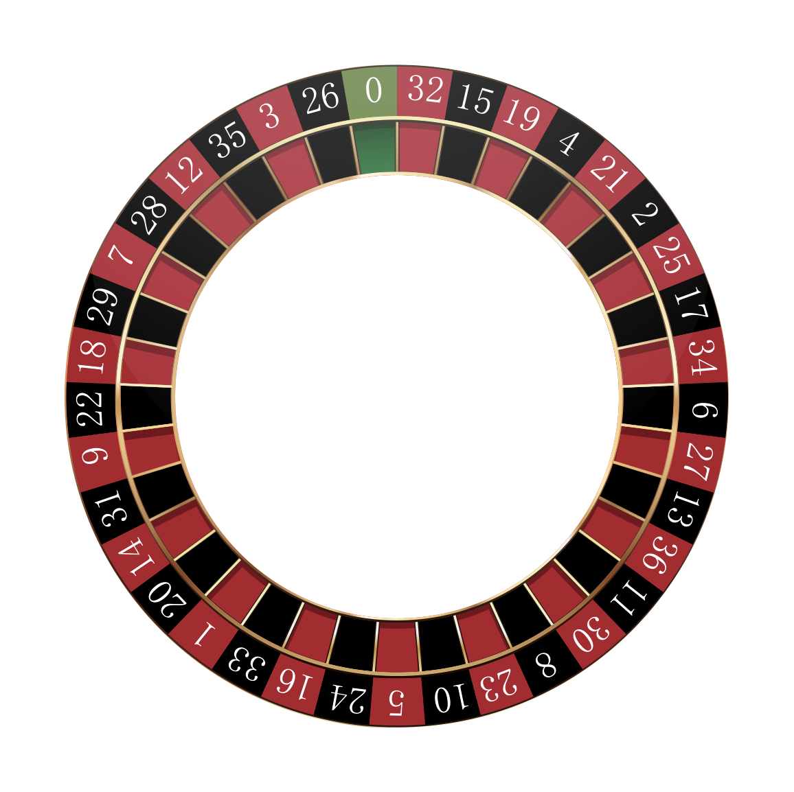

Rick Roulette



Rick Roulette is a Chrome extension which will do stuff
Are you a glutton for punishment?
Or do you secretly love being Rick Rolled? No judgement here, but this extension might come in handy for you!
Whenever you visit a YouTube page, you'll have a 1 in N chance of having the video element replaced with a Rick Roll. The value of N is 6 by default but you can configure this to whatever number you choose.